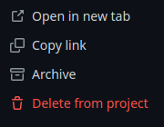
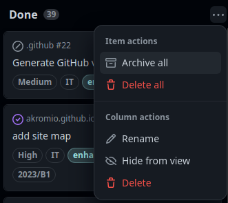
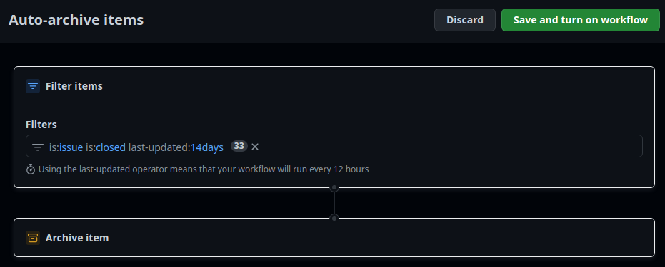
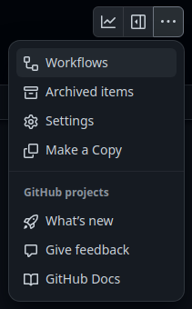
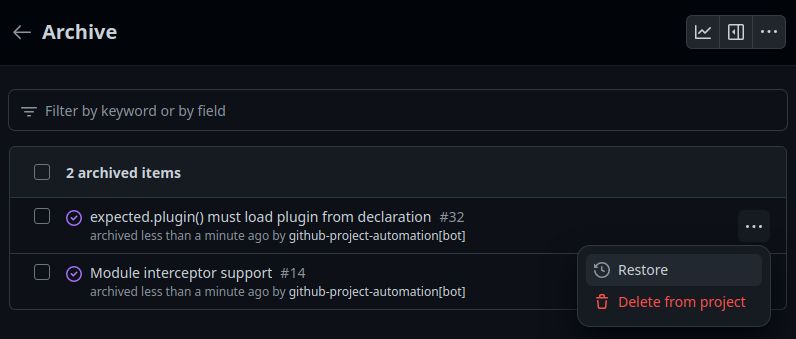
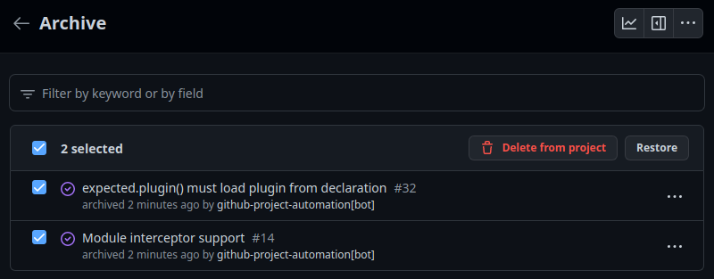

Archivo de ítems de GitHub Projects
Cuando el proyecto crece y es muy activo, el número de ítems aumenta rápidamente y puede resultar interesante archivar algunos de ellos para que no aparezcan en las vistas del proyecto o bien para que no se alcance el límite máximo marcado por GitHub.
Al finalizar, sabrá:
-
Qué es el archivo de ítems.
-
Cómo se realiza el archivo de ítems.
-
Cómo consultar los ítems archivados.
-
Cómo restaurar ítems archivados.
-
Cómo eliminar ítems archivados.
Introducción
Un proyecto puede tener hasta 1200 ítems sin archivar. Y como archivados, 10000. Si se alcanza el tope de los archivados, deberá realizar una supresión para hacer hueco.
El archivo (archive) es una operación mediante la cual se suprime el ítem de las vistas del proyecto y se lleva a una zona de almacenamiento que impide su modificación. Los ítems no archivados se muestran en las vistas del proyecto y se pueden modificar independientemente de su estatus actual. En cambio, los archivados ya no aparecen en las vistas y no se pueden modificar, aunque sí pueden consultarse y restaurarse.
Es la organización y/o el proyecto quien determina cuándo se debe realizar el archivo de ítems. Algunas organizaciones pueden decidir que tras llevar un mes en el estatus Done deben archivarse. Otras pueden desear mantener las de las últimas iteraciones por si fuera necesario consultar los ítems fácil y rápidamente.
Archivo de ítems
El archivo de ítems es una operación por la que se mueve los ítems de un proyecto a un área especial donde no se pueden modificar. Al mismo tiempo, desaparecen de las vistas del proyecto. Este archivo puede realizarse de manera manual o automática mediante flujos de GitHub Projects.
Archivo manual de ítems
El archivo manual puede hacerse a nivel de ítem individual o de estatus del proyecto. En caso de ítem individual, basta con editar el ítem y hacer clic en Archive, se puede hacer independientemente del estatus en el que se encuentre este:

Si lo que deseamos es archivar todos los ítems que se encuentran en un determinado estatus, lo más habitual, mostraremos su menú contextual y, a continuación, seleccionaremos Archive all:

Archivo automático de ítems
En ocasiones, puede ser útil archivar los ítems de manera automática mediante el flujo Auto-archive items del proyecto:

Mediante el filtro, se indica la condición que debe cumplir el ítem para su archivo. En el ejemplo anterior, se archivará todo ítem que tenga asociada una propuesta cerrada y no se haya actualizado en los últimos catorce días.
Los archivos realizados de esta manera tendrán como usuario archivador github-project-automation.
Consulta de los ítems archivados
Para consultar los ítems archivados, haremos clic en los tres puntos (...) del proyecto y, a continuación, en Archived items:

Restauración de ítems
La restauración (restore) es la operación mediante la cual devolvemos un ítem archivado a las vistas del proyecto. Se puede hacer individualmente o en grupo.
Restauración de un ítem
Para restaurar un único ítem, no hay más que ir a la lista de ítems archivados y, a continuación, hacer clic en los tres puntos (...) del item en cuestión y, en su menú contextual, seleccionar Restore:

Restauración de múltiples ítems
Para restaurar varios ítems, los seleccionaremos y, a continuación, haremos clic en Restore:

Supresión de ítems
En los dos ejemplos anteriores, puede observar que podemos suprimir ítems archivados haciendo clic en Delete from project. Generalmente, no querrá hacerlo a menos que haya alcanzado el límite máximo que es 10000 en el momento de escribir estas líneas.